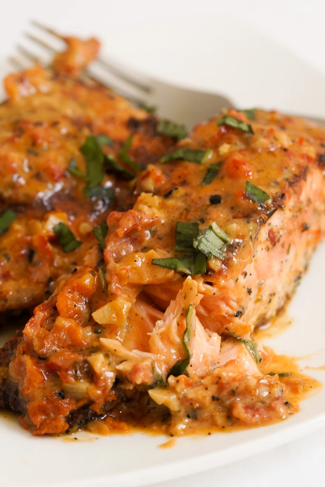

Prep Time: 10 minutes
Cook Time: 30 minutes
Total Time: 40 minutes
Servings: 3-4
Difficulty: Easy
Step 1: In a small bowl combine dried basil, garlic powder, onion powder, dried thyme, red pepper flakes, salt, and black pepper.
Step 2: Rub half of the seasoning mixture onto both sides of the salmon fillets.
Step 3: Heat olive oil in a large skillet over medium-high heat. Add the salmon flesh side down and sear for about 5 minutes per side.
Step 4: Once the salmon is seared, remove it from the skillet and set aside.
Step 5: In the same skillet add minced garlic and chopped sun dried tomatoes. Sauté over low heat for 1–2 minutes.
Step 6: Pour in the chicken stock and scrape the bottom of the pan to deglaze it.
Step 7: Add heavy cream, parmesan cheese, and the remaining seasoning mixture. Stir well.
Step 8: Simmer on medium-low heat for 10–15 minutes until the sauce thickens.
Step 9: Return the salmon to the skillet and spoon sauce over the fillets. Cook for another 3–5 minutes depending on desired doneness.
Step 10: Garnish with fresh basil and serve.